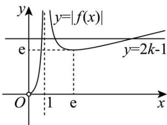
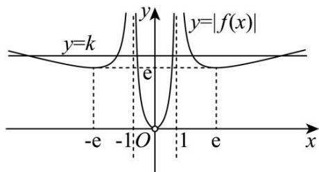
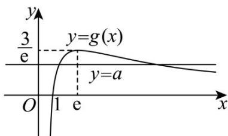

深圳中学 2024 级高二数学周测（4）参考答案
| 选择题 | 多选题 | |||||||||
| 1 | 2 | 3 | 4 | 5 | 6 | 7 | 8 | 9 | 10 | 11 |
| D | C | D | B | C | A | B | B | ACD | ACD | BCD |
填空题：12. 3-e 13. -1 14. (0,2)
11.
详解解：对于 A 选项， \(f(x)=\frac{x}{\ln x}\) 的定义域为 \((0,1)\cup(1,+\infty)\) ，所以 A 选项错误；
对于B选项， \(f^{\prime}(x) = \frac{\ln x - 1}{\ln^{2}x}\) ，令 \(f^{\prime}(x) > 0\) 可得 \(x > \mathrm{e}\)
即函数 \(f(x)\) 在 \((e, +\infty)\) 上单调递增， \(f(2) = \frac{2}{\ln 2} = \frac{4}{2 \ln 2} = \frac{4}{\ln 4} = f(4), e < \pi < 4\) ，
即 \(f(\pi) < f(4) = f(2)\) ，所以B选项正确；
对于 C 选项，令 \(g(x)=\left|f(x)\right|-2k+1=0\) ，即 \(\left|f(x)\right|=2k-1\) ，
\(g(x)=\left|f(x)\right|-2k+1\) 有 3 个不同的零点等价于函数 \(y_{1}=\left|f(x)\right|\) 和函数 \(y_{2}=2k-1\) 有 3 个不同的交点，

由图像可知， \(2k - 1 > \mathrm{e}\) ，解得 \(k > \frac{\mathrm{e} + 1}{2}\) ，所以C选项正确；对于D选项，方程 \(\left|f(|x|)\right| = k\) 有6个不等实数根等价于函数 \(y_{1} = \left|f(|x|)\right|\) 和函数 \(y_{2} = k\) 有6个不同的交点，

由图像可知，k > e，所以 D 选项正确.
13.
详解不妨取 \(\forall x_{1}>x_{2}\in(0,+\infty)\) ，由 \(\frac{f(x_{1})-f(x_{2})}{x_{1}-x_{2}}<a\) 可得 \(f(x_{1})-f(x_{2})<a(x_{1}-x_{2})\) ，即 \(f(x_{1})-ax_{1}<f(x_{2})-ax_{2}\) ， 令 \(g(x)=f(x)-ax\) ，可得 \(\forall x_{1}>x_{2}\in(0,+\infty)\) ， \(g(x_{1})<g(x_{2})\) ，
即可得 \(g(x)\) 在 \((0, +\infty)\) 上单调递减，所以 \(g'(x) \leq 0\) 在 \((0, +\infty)\) 上恒成立，
又易知 \(g(x) = (a - x)\ln x + x - 1 - ax\) ，则 \(g^{\prime}(x) = -\ln x + \frac{a - x}{x} +1 - a = -\ln x + \frac{a}{x} -a\)
令 \(g^{\prime}(x) = h(x) = -\ln x + \frac{a}{x} -a\) ，则 \(h^\prime (x) = -\frac{1}{x} -\frac{a}{x^2} = -\frac{x + a}{x^2};\)
当 \(a\geq0\) 时，易知 \(h'(x)<0\) 恒成立，此时 \(h(x)\) 在 \((0,+\infty)\) 上单调递减，即 \(g'(x)\) 在 \((0,+\infty)\) 上单调递减，
又 \(g'(1)=h(1)=0\) ，所以当 \(x\in(0,1)\) 时， \(g'(x)>h(1)=0\) ，不合题意；
当 \(a < 0\) 时，易知当 \(x \in (0, -a)\) 时， \(h'(x) > 0\) ，当 \(x \in (-a, +\infty)\) 时， \(h'(x) < 0\) ，
即可得 \(h(x)\) 在 \((0, -a)\) 上单调递增，在 \((-a, +\infty)\) 上单调递减，所以 \(h(x)\) 在 \(x = -a\) 处取得极大值，也是最大值，
若 \(g^{\prime}(x)\leq 0\) 在 \((0, + \infty)\) 上恒成立，即 \(h(x)\leq 0\) 在 \((0, + \infty)\) 上恒成立，所以只需保证 \(h(x)_{\max} = h(-a)\leq 0\) 恒成立即可，
令 \(k(a) = h(-a) = -\ln (-a) - 1 - a, a < 0\) ，则 \(k'(a) = -\frac{1}{a} - 1 = -\frac{a + 1}{a}\) ，
显然当 \(a \in (-\infty, -1)\) 时， \(k'(-a) < 0\) ，当 \(a \in (-1, 0)\) 时， \(k'(-a) > 0\) ，
即可得 \(k(a)\) ，即 \(h(-a)\) 在 \(a = -1\) 处取得极小值，又 \(h(1) = 0\) ，即 \(h(-a) \geq h(1) = 0\) ，
所以 \(h(-a) = h(1) = 0\) ，即 \(a = -1\)
14. (0,2)
详解 \(f(x)=x^{3}+x-\sin x\) ，得 \(f(-x)=(-x)^{3}-x-\sin(-x)=-\left(x^{3}+x-\sin x\right)=-f(x)\)
故 \(f(x)\) 为定义在R上的奇函数.所以 \(f(t^{2}-t)+f(-t)<f(0)\) 可写为 \(f(t^{2}-t)+f(-t)<0\) ,
即 \(f(t^2 - t) < -f(-t)\) ，根据奇函数易得 \(f(t^2 - t) < f(t)\) . 函数 \(f(x) = x^3 + x - \sin x\) 的导数为 \(f'(x) = 3x^2 + 1 - \cos x\) ，
而 \(\cos x \in [-1,1], x^{2} \geq 0\) ，所以 \(f'(x) = 3x^{2} + 1 - \cos x \geq 0\) ，故函数 \(f(x)\) 在 R 上单调递增，故不等式 \(f(t^{2} - t) < f(t)\) 的解集等价于 \(t^{2} - t < t\) 的解集，解得 \(t \in (0,2)\) .
15.
详解（1）当 \(a = 1\) 时， \(f(x) = x^2 - 3x\ln x, f(1) = 1\) 。 \(f'(x) = 2x - 3\ln x - 3, f'(1) = -1.\)
所以曲线 \(y = f(x)\) 在 \((1, f(1))\) 处的切线方程为 \(y - 1 = -1(x - 1)\) ，即 \(x + y - 2 = 0\) 。
（2）因为 \(a > 0, x > 0\) ，令 \(f(x) = a^2 x^2 - 3ax\ln x = 0\) ，得 \(ax - 3\ln x = 0\) ，即 \(a = \frac{3\ln x}{x}\) .
令 \(g(x) = \frac{3\ln x}{x} (x > 0)\) ，所以 \(f(x)\) 的零点个数等价于 \(y = g(x)\) 与 \(y = a\) 的图象交点的个数.
又因为 \(g'(x)=\frac{3(1-\ln x)}{x^{2}}\) ，当 0<x
所以函数 \(g(x)\) 在 \((0, \mathbf{e})\) 上单调递增，在 \((\mathbf{e}, +\infty)\) 上单调递减，且 \(g(1) = 0\) ，有极大值也是最大值 \(g(\mathbf{e}) = \frac{3}{\mathbf{e}}\) ，如图：
由图可知，当 \(a > \frac{3}{\mathrm{e}}\) 时，函数 \(y = g(x)\) 与 \(y = a\) 的图象无交点；
当 \(a = \frac{3}{\mathrm{e}}\) 时，函数 \(y = g(x)\) 与 \(y = a\) 的图象有1个交点；

当 \(0 < a < \frac{3}{\mathrm{e}}\) 时，函数 \(y = g(x)\) 与 \(y = a\) 的图象有2个交点.
综上， \(a > \frac{3}{\mathrm{e}}\) 时， \(f(x)\) 的零点个数为0； \(a = \frac{3}{\mathrm{e}}\) 时， \(f(x)\) 的零点个数为1； \(0 < a < \frac{3}{\mathrm{e}}\) 时， \(f(x)\) 的零点个数为2.
16.
详解（1）当 \(a = \mathbf{e}\) 时， \(h(x) = \mathrm{e}^x - \frac{\mathrm{e}}{x}, h'(x) = \mathrm{e}^x + \frac{\mathrm{e}}{x^2}\) ，所以 \(h'(1) = 2\mathrm{e}\) ，又 \(h(1) = 0\)
所以所求的切线方程为 \(y = 2\mathrm{e}(x - 1)\)
（2）由题意，当 \(x < 0\) 时， \(h(x) = \mathrm{e}^x - \frac{a}{x} < 0\) ，即 \(a < x\mathrm{e}^x\) 。设函数 \(w(x) = x\mathrm{e}^x, x \in (-\infty, 0)\) ，则 \(w'(x) = (1 + x)\mathrm{e}^x\)
令 \(w'(x)=0\) ，解得x=-1，当 \(x\in(-\infty,-1)\) 时， \(w'(x)<0,w(x)\) 单调递减，当 \(x\in(-1,0)\) 时， \(w'(x)>0,w(x)\) 单调递增.
所以当 \(x = -1\) 时， \(w(x)\) 取得最小值， \(w(x)_{\min} = w(-1) = -\frac{1}{e}\) ，所以 \(a < -\frac{1}{e}\) ，即 \(a\) 的取值范围是 \(\left(-\infty, -\frac{1}{e}\right)\) .
（3）方法一：依题意 \(\left\{\begin{aligned}\mathrm{e}^{m}&=\frac{a}{n}\\ \mathrm{e}^{n}&=\frac{a}{m}\end{aligned}\right.\) ，因为m>0,n>0，所以a>0，
整理可得 \(\left\{\begin{aligned}n\mathrm{e}^{m}&=a\\ m\mathrm{e}^{n}&=a\end{aligned}\right.\) ，即 \(\left\{\begin{aligned}m&=\ln a-\ln n\\ n&=\ln a-\ln m\end{aligned}\right.\) ，所以 \(\left\{\begin{aligned}\mathrm{e}^{m}\left(\ln a-\ln m\right)&=a\\ \mathrm{e}^{n}\left(\ln a-\ln n\right)&=a\end{aligned}\right.\) ；
即函数 \(\varphi(x) = \mathrm{e}^{x}(\ln a - \ln x)\) 的图象与直线 \(y = a\) 至少有两个交点． \(\varphi'(x) = \mathrm{e}^x\left(\ln a - \ln x - \frac{1}{x}\right),\)
设函数 \(u(x) = \ln x + \frac{1}{x}\) ，则 \(\varphi'(x) = \mathrm{e}^x [\ln a - u(x)]\) ，
易知 \(u(x)\) 在区间 \((0,1)\) 上单调递减，在区间 \((1,+\infty)\) 上单调递增，且 \(u(1)=1\) ，
若 \(\ln a \leq 1\) ，则 \(\varphi'(x) \leq 0, \varphi(x)\) 单调递减， \(\varphi(x)\) 至多有 1 个零点，不符合题意；
若 \(\ln a > 1\) ，即 \(a > \mathrm{e}\) ，则函数 \(y = \ln a - u(x)\) 存在两个零点，记为 \(x_{1}, x_{2}\) ，且 \(x_{1} < 1 < x_{2}\)
其中 \(\ln a = \ln x_{1} + \frac{1}{x_{1}} = \ln x_{2} + \frac{1}{x_{2}}\) ,
所以 \(\varphi(x)\) 在区间 \((0, x_{1})\) 和 \((x_{2}, +\infty)\) 上单调递减，在区间 \((x_{1}, x_{2})\) 上单调递增，
所以 \(\varphi (x)\) 的极小值为 \(\varphi (x_1) = \mathrm{e}^{x_1}\left(\ln a - \ln x_1\right) = \frac{\mathrm{e}^{x_1}}{x_1} = \mathrm{e}^{x_1 - \ln x_1}\) ，极大值为 \(\varphi (x_2) = \mathrm{e}^{x_2 - \ln x_2}\) .
再比较 \(\varphi(x_1), \varphi(x_2)\) 与 \(a\) 的大小:
\[\ln a - \ln \varphi (x _ {1}) = 2 \ln x _ {1} + \frac {1}{x _ {1}} - x _ {1}, \ln a - \ln \varphi (x _ {2}) = 2 \ln x _ {2} + \frac {1}{x _ {2}} - x _ {2}.\]
设 \(t(x) = 2\ln x + \frac{1}{x} -x\) ，则 \(t^{\prime}(x) = \frac{2}{x} -\frac{1}{x^{2}} -1 = \frac{-(x - 1)^{2}}{x^{2}}\leq 0,\)
所以 \(t(x)\) 单调递减， \(t(x_{1}) > t(1) > t(x_{2})\) ，即 \(t(x_{1}) > 0 > t(x_{2})\) ，从而 \(\varphi(x_{1}) < a < \varphi(x_{2})\) 。
因为 \(a > \mathbf{e}\) ，且 \(x_{1} < 1 < x_{2}\)
所以 \(\varphi(x)=\mathrm{e}^{x}(\ln a-\ln x)>\ln a-\ln x>-\ln x\) ，且 \(0<\frac{x_{1}}{\mathrm{e}^{a}}<x_{1},ax_{2}>x_{2}\)
所以 \(\varphi\left(\frac{x_1}{\mathrm{e}^a}\right) > -\ln\frac{x_1}{\mathrm{e}^a} = a - \ln x_1 > a\) ，且 \(\varphi(ax_2) = \mathrm{e}^{ax_2}\left[\ln a - \ln(ax_2)\right] = -\mathrm{e}^{ax_2}\ln x_2 < 0 < a\) ，
所以 \(\varphi(x)\) 的图象与直线 y=a 在区间 \(\left(\frac{x_{1}}{\mathrm{e}^{a}},x_{1}\right),\left(x_{1},x_{2}\right),\left(x_{2},ax_{2}\right)\) 内各有一个交点，因此 a>e 符合题意. 综上，a 的取值范围是 \((\mathrm{e},+\infty)\) .
方法二：由题意得 \(\mathrm{e}^m = \frac{a}{n},\mathrm{e}^n = \frac{a}{m}\) ，因为 \(m > 0,n > 0\) ，所以 \(a > 0\) ：
不妨设 \(n > m, t = \frac{n}{m} > 1\) ，则 \(\frac{\mathrm{e}^n}{\mathrm{e}^m} = \frac{n}{m} = t \Rightarrow \mathrm{e}^n = t \mathrm{e}^m\) ，两边取对数得 \(n = m + \ln t\) ，
所以 \(n = tm = m + \ln t \Rightarrow m = \frac{\ln t}{t - 1}, n = tm = \frac{t \ln t}{t - 1}\) ，所以 \(a = m e^{n} = \frac{\ln t}{t - 1} \cdot e^{\frac{t \ln t}{t - 1}} = A(t), t > 1\) 。
设 \(\varphi(t) = \ln A(t) = \ln (\ln t) - \ln (t - 1) + \frac{t\ln t}{t - 1}\) , 则 \(\varphi'(t) = \frac{1}{t\ln t} - \frac{\ln t}{(t - 1)^2}\) ,
\[\varphi^ {\prime} (t) > 0 \Leftrightarrow (t - 1) ^ {2} > t (\ln t) ^ {2} \Leftrightarrow t - 1 > \sqrt {t} \ln t \Leftrightarrow t - \sqrt {t} \ln t - 1 > 0.\]
设 \(w(t) = t - \sqrt{t}\ln t - 1\) ，则 \(w^{\prime}(t) = \frac{\sqrt{t} - \ln\sqrt{t} - 1}{\sqrt{t}} >0\) （根据不等式 \(\ln x < x - 1(x > 1)\) ），
故 \(w(t)\) 单调递增， \(t>1\Rightarrow w(t)>w(1)=0\) ，所以 \(\varphi'(t)>0\Rightarrow\varphi(t)\) 在 \((1,+\infty)\) 上单调递增，
所以 \(A(t)\) 在 \((1, +\infty)\) 上单调递增，又当 \(t \to 1\) 时， \(\frac{\ln t}{t - 1} \to 1\) ，所以 \(A(t) \to \mathsf{e}\) ，故 \(a\) 的取值范围是 \((\mathsf{e}, +\infty)\) .